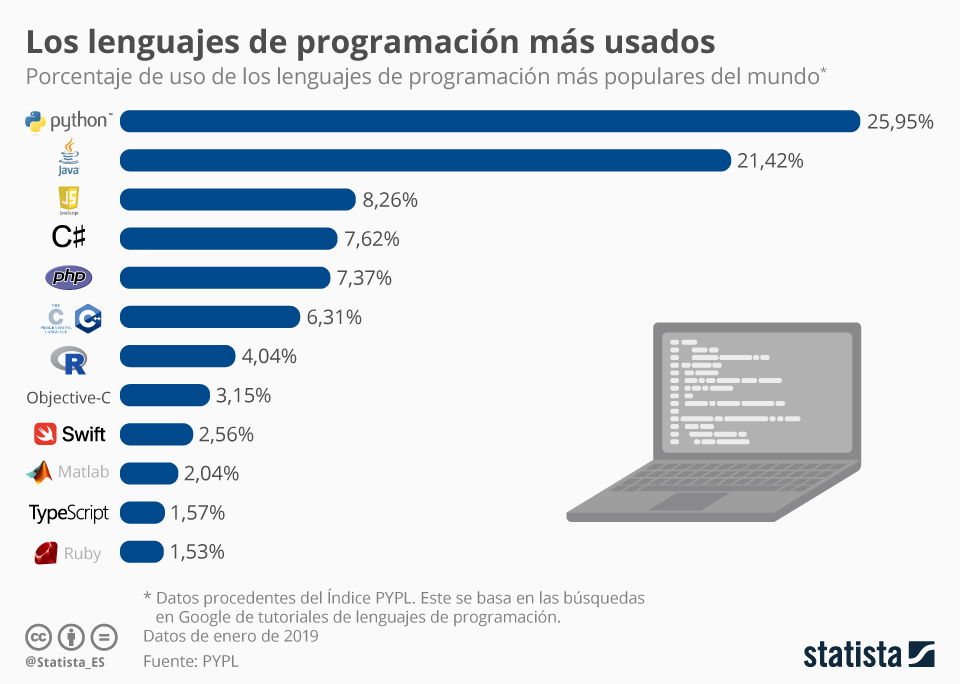

Introducción#
Con la digitalización en el centro de la estrategia empresarial, los perfiles tecnológicos asociados al desarrollo de software, DevOps, las ciencias de datos, ciberseguridad y móviles se posicionan como los más codiciados por las compañías nacionales e internacionales que operan en el país.
Desarrolladores Full Stack: Entre 5.000.000 y 20.000.000 de pesos.
Ingenieros DevOps: Entre 12.000.000 y 25.000.000 de pesos.
Científicos de datos: Entre 9.000.000 y 25.000.000 de pesos.
Expertos en ciberseguridad: Entre 7.000.000 y 20.000.000 de pesos.
Desarrolladores de aplicaciones móviles: Entre 8.000.000 y 26.000.000 de pesos.
Xataka Colombia - Salarios de perfiles tecnológicos en 2024

Python Nace en 1989. Este es un lenguaje de programacion que nace con el proposito de integrar de manera eficiente distintos procesos.
Es muy llamativo por su legibilidad y facilidad de uso. No requiere la declaración de variables, a diferencia de otros lenguajes
Ejemplos de codigos#
Python#
n = 10
for i in range(n):
print(f'{n}**{i}: {n**i}')
Java#
public class Potencias {
public static void main(String[] args) {
int n = 10;
for (int i = 0; i < n; i++) {
System.out.println(n + "**" + i + ": " + (int) Math.pow(n, i));
}
}
}
C++#
#include <iostream>
#include <cmath>
int main() {
int n = 10;
for (int i = 0; i < n; i++) {
std::cout << n << "**" << i << ": " << static_cast<int>(pow(n, i)) << std::endl;
}
return 0;
}
JavaScript#
let n = 10;
for (let i = 0; i < n; i++) {
console.log(`${n}**${i}: ${n ** i}`);
}
1. 🌐#
Se usa con frameworks como Django y Flask para crear sitios web, APIs y aplicaciones escalables.
Ejemplo: Backends de plataformas como Instagram y Spotify.
2. 📊🤖#
Ampliamente utilizado en análisis de datos, modelado estadístico y aprendizaje automático.
Librerías clave: Pandas, NumPy, scikit-learn, TensorFlow, PyTorch.
3. ⚙️#
Permite escribir scripts que automatizan tareas repetitivas como procesamiento de archivos, web scraping o administración de sistemas.
Librerías clave: Selenium, BeautifulSoup, OS, shutil.
4. 💻#
Se usa para crear aplicaciones de escritorio, videojuegos y software en general.
Librerías clave: PyQt, Tkinter, Kivy, Pygame.
5. 🔐#
Python es utilizado para análisis forense, pruebas de penetración y creación de herramientas de seguridad.
Librerías clave: Scapy, PyCryptodome, Impacket, Requests.